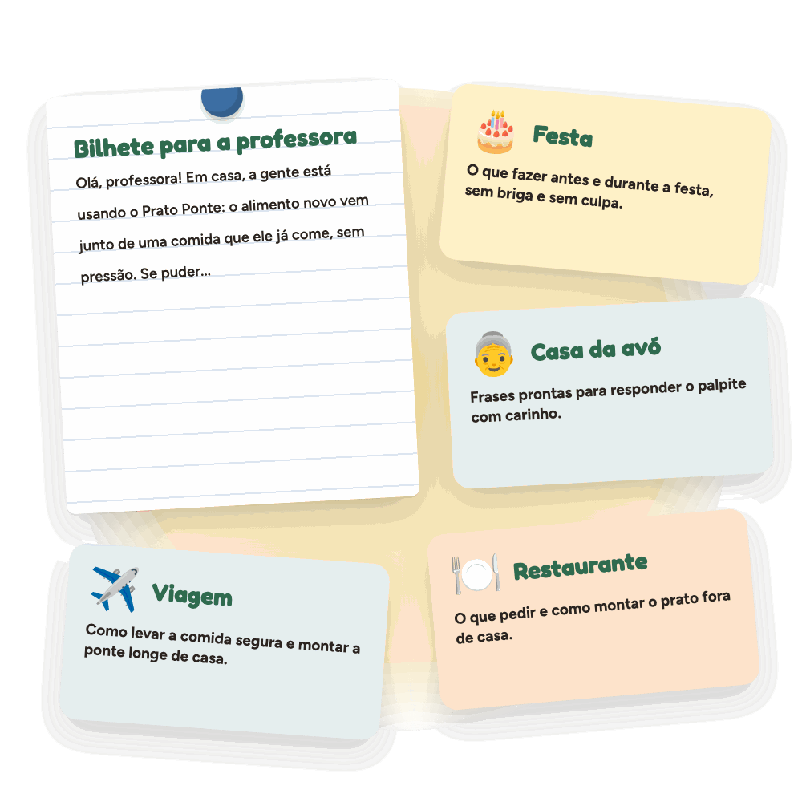

Falta um passo seu Prato Ponte já está garantido
Tudo bem. Que tal o mesmo Fora de Casa por R$ 19,90?
É o mesmo material completo, por R$ 19,90, pagamento único, com a mesma garantia de 7 dias. Nada fica de fora.

Fora de Casa
Escola e creche, festa de aniversário, casa da avó, restaurante e viagem.
- Bilhete pronto para a professora.
- Festa de aniversário sem briga.
- Frases para o palpite da família.
- Restaurante e viagem.
Para quem é
Para quem ouve palpite da família ou se preocupa com o que a criança come longe de você.
Na página anterior: R$ 37
R$19,90
Pagamento único · Garantia de 7 dias
Se preferir não levar, toque em “Não, obrigada”. Seu Prato Ponte continua garantido e o acesso chega no seu e-mail.